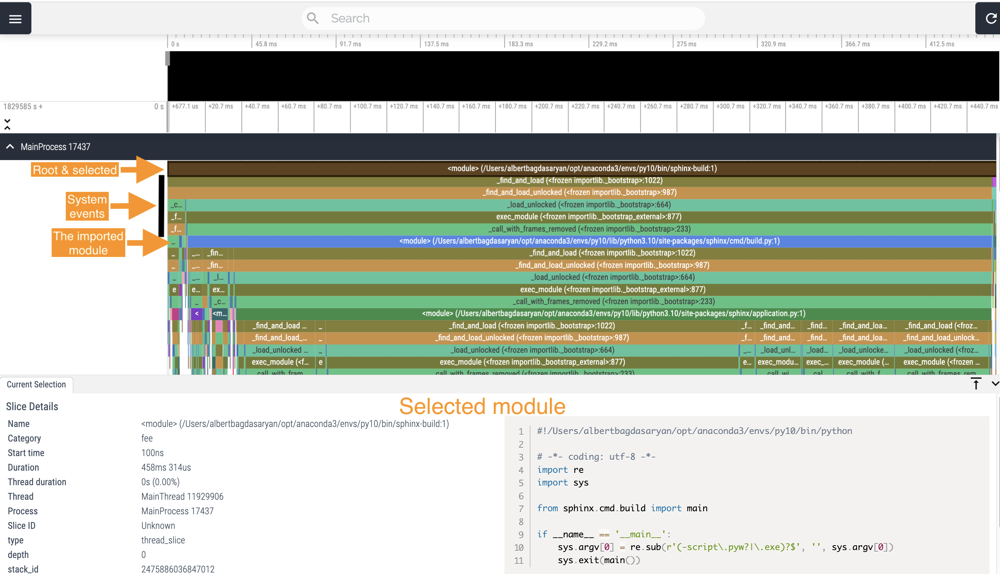

Warning
This draft documentation is under development.
The Tracking Tool¶
For the results presented in this documentation, the VizTracer Python package was used as the main research tool.
Overview¶
There are various ways of using the selected tool. Generally, the process consists of two steps:
Run the tracer utility along with the program you need to trace. It will record the result to a JSON file.
Run the viewer utility to parse the result and present it as an interactive page in the browser.
You need to install the package using the pip manager as follows:
$ pip install viztracer
Running from command line¶
The easiest way to trace is to insert viztracer before the command you use to run your python application.
This is especially useful when you cannot change the application.
For example, you can trace the whole documentation build process as follows:
$ viztracer [-o <output_file>] sphinx-build -b dirhtml
The output file can be in the JSON or HTML format. You can also request a file with the .json.gzip name
extension if you need a compressed JSON file.
To reduce the trace stack, it is better to exclude all calls of C functions from tracking:
$ viztracer --ignore_c_function sphinx-build -b dirhtml "." "_build"
By default, this utility dumps all trace results to a local file result.json. This is an example
reminder it prints out (the full path is not displayed here intentionally):
The HTML pages are in _build.
Total Entries: 457026
Use the following command to open the report:
vizviewer /<path_to_the_local_folder>/result.json
As recommended in the output, run the vizviewer utility to parse and view the result:
$ vizviewer [--port <number>] result.json
The default port number is 9001.
Note
You can stop the server after your browser renders the result, because the latter stores the loaded data and you can work with it offline.
A separate section Analyzing the result in this document describes the use of the interactive viewer.
This tracer utility provides some options that you can use to customize you search, for example:
To see only some top level program calls, limit the depth of the stack. For example, to get Sphinx calls not deeper than 5 levels, use this command:
$ viztracer -o top.json --max_stack_depth 10 --ignore_c_function sphinx-build -b dirhtml "." "_build"
Running from code¶
If you need to focus on a specific part of the program you research, you can insert the tracer to the corresponding place inside the program. There are two variations of this approach:
Start and stop the process explicitly, for example:
from viztracer import VizTracer tracer = VizTracer() tracer.start() # Your program code is here. tracer.stop() tracer.save() # Optionally, you can specify the output file.
Using the
withstatement, for example:with VizTracer(output_file="optional.json") as tracer: # The output_file is optional. # Your program code is here.
Analyzing the result¶
The vizvieweer represents a series of calls as a tree-like graph with the first called function on the root.
Every horizontal bar represents a separate Python or system call, generally called an event.
Default presentation¶
The easiest way to open the traced result is to run the viewer without any flags:
$ vizviewer result.json
This command will render the specified JSON file and present it in the browser. After opening the MainProcess panel, you will see the tracing graph similar to this:
{kind=link}
Most often you will probably use the following operations with this view:
Select an event and see its contents in text panel on the bottom.
In this example, the root module (
sphinx-build) is selected.Find the event’s ancestors and children.
In this example, the
sphinx-buildimports themainfunction from thesphinx.cmd.buildmodule. That is why, if you skip some system calls, the first custom child is the importedsphinx.cmd.buildmodule.Quickly change the graph presentation using the AWSD (no need to press SHIFT) keyboard shortcuts:
WandSenable you to zoom in and zoom out the graph view. Notice, that on your keyboard the letterWis above the letterS. This makes them easier to remember, becauseWmeans up, that is, expanding the view, andSmeans lowering, that is reducing the view. If you pay attention at the black timeline at the top, you will notice thatWnarrows the selected time range, whileSexpands it.AandDare on the same horizontal line. That’s why withAyou move the graph view to the left, and withDyou move it to the right. Notice that you can use these shortcuts as long as the selected time range allows you to do so. If it doesn’t, useWbeforehand to narrow the time range.
Flame Graph¶
A Flame Graph format might be more convenient for tracing the internal calls. You can run it with the viewer as follows:
$ vizviewer --flamegraph result.json
The advantage of this view is that it automatically expands or contracts the time range to display the selected event in expanded form on the screen.

Pay attention, this view doesn’t display the contents of the selected event, unlike the method discussed earlier.
Additional resources¶
For more details on using viztracer, see the following resources: